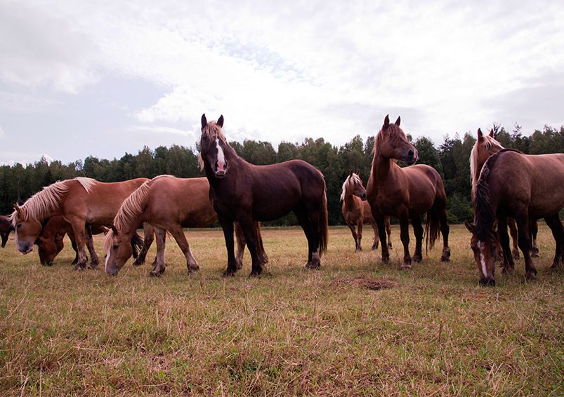

Кумыс известен кочевым народам с глубокой древности. Его готовили кочевники юго-восточной части России и Средней Азии, а также южных причерноморских степных районов. Первое упоминание о кумысе можно встретить у древнегреческого историка и путешественника Геродота, жившего в V веке до н.э. Он писал, что излюбленным напитком скифов-кочевников было кобылье молоко, приготовенное по особому методу. Кочевники тщательно скрывали секрет приготовления кумыса. Тех, кто разглашал эту тайну, ослепляли.
Кумыс известен кочевым народам с глубокой древности. Его готовили кочевники юго-восточной части России и Средней Азии, а также южных причерноморских степных районов. Первое упоминание о кумысе можно встретить у древнегреческого историка и путешественника Геродота, жившего в V веке до н.э. Он писал, что излюбленным напитком скифов-кочевников было кобылье молоко, приготовленное по особому методу. Кочевники тщательно скрывали секрет приготовления кумыса. Тех, кто разглашал эту тайну, ослепляли.
Ислам, как известно, запрещает мусульманам употреблять алкогольные напитки. Кумыс же Кораном не запрещен, и, таким образом, он является единственным опьяняющим напитком у мусульман.
Кумыс известен кочевым народам с глубокой древности. Его готовили кочевники юго-восточной части России и Средней Азии, а также южных причерноморских степных районов. Первое упоминание о кумысе можно встретить у древнегреческого историка и путешественника Геродота, жившего в V веке до н.э.
В специальных кумысолечебницах и санаториях кумыс делают на закваске, приготовленной на чистых культурах молочнокислых палочек и дрожжей при строго выдержанном режиме ферментации. Свертываясь, белок молока кобылиц образует мелкие нежные хлопья, почти неощутимые на языке, и заквашенное молоко кобылиц по своей консистенции отличается от свежего.
Кумыс известен кочевым народам с глубокой древности. Его готовили кочевники юго-восточной части России и Средней Азии, а также южных
причерноморских степных районов. Первое упоминание о кумысе можно встретить у древнегреческого историка и путешественника Геродота, жившего в V веке до н.э. с глубокой древности. Его готовили кочевники юго-восточной части России и Средней Азии, а также южных причерноморских степных районов. Первое упоминание о кумысе можно встретить у древнегреческого историка и путешественника Геродота, жившего в V веке до н.э.
Кумыс известен кочевым народам с глубокой древности. Его готовили кочевники юго-восточной части России и Средней Азии, а также южных причерноморских степных районов. Первое упоминание о кумысе можно встретить у древнегре-ческого историка и путешественника Геродота, жившего в V веке до н.э.
Рецепты коктейлей
из кобыльего молока
06 марта 2015
Чем мы кормим лошадей
06 марта 2015
Лошади одни из умнейших животных на Земле.
06 марта 2015